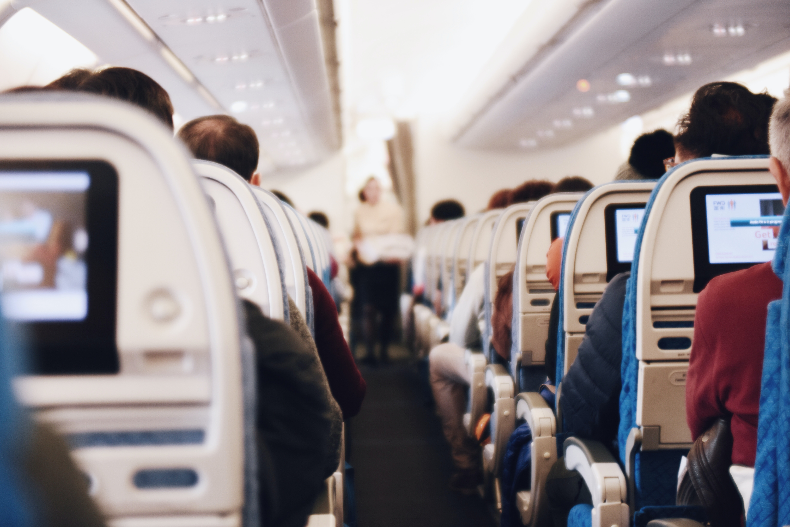

Rental cars can be astronomacally expensive. The following area few quick tips to save you some dough...
Before you book check with your personal car insurance provider, many policys provide coverage and you can avoid the daily insurace fees which add up quick.
When booking they will offer you extras such as GPS and Return on Empty options.
With the advances in Cell phone technology, GPS is not nessecary anymore. Invest in a protable phone
holder for the vehicle and an auxillary cord so you can be hands free.
The retun on empty option can be convienient but chances are you will end up paying for it.
We used this option on the East Coast once and ended up paying almost double what we would if we wold have stopped along the way. Plan ahead and fill up by the airport.
Plane Tickets

Check early, check often
Ticket prices are always fluxuating, Do you research and know your budget.
Websites like Experidia, Priceline and Hopper have great deals sometime times depending on what time of year you are booking, but always cross refernce the airlines offcial website
and make sure it really is a deal. Someimtes you can get a better seat or lower cost using the airline (sometimes!!)
KNow your travel dates. Traveiling during the holidays can be stressful and expensive. If you can give yoruself a few extra days. Hawaii at Christmas? How about December 18-January 5? The few extra days
can not only save money but help you avoid the made dash at that airport. Plus who wouldnt want a few extra days at the beach!!
When searchign the internet make sure to clear your cookies on your device or use a diffent device. Sometimet he search history is stored and the prices wont update when the site changes and you might miss a better deal.
Be patient, do your homework and plan ahead. This can save you time and stress
Where to stay
Hotels are great.
convientient
room service and contiental breakfast (sometimes)
housekeeping
tiny shampoo and soap
Sometimes you can find killer deals and it works our well, other times there is a soccer team of 12 year olds with no supervision practicing one floor above your head!
In recent years the popularity of Air B & B's has taken off. If you don't have your heart set on pre-made coffee, bagles and someone else making your bed everyday, this can be a great opton.
We took my son to San Diego for his graduation trip and took a couple of our friends along. We found and condo a block from the beach wiht 3 bed room and 2 bathrooms for less than the price of
a hotel. We had privacy and got a real taste for local living in the area. THe house was fully equiped with everything from internet and satilite, to movies and games, even bike and boggie boards.A quick stoppedat the
grocery store and we got coffee and snacks. This was much more low key and relaxing.


 Hotels are great.
Hotels are great.